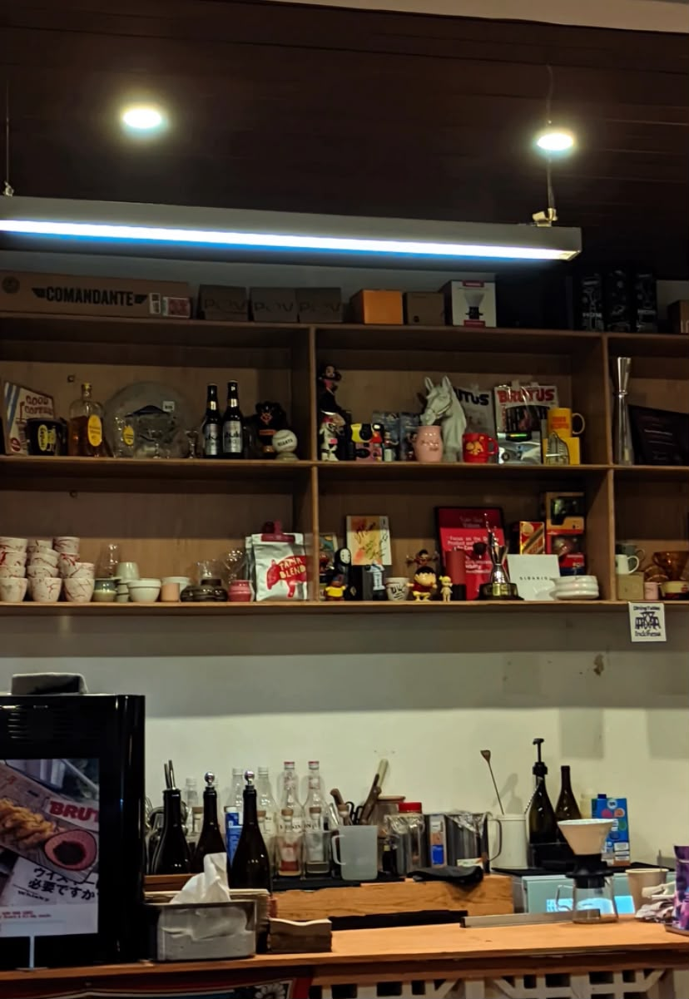
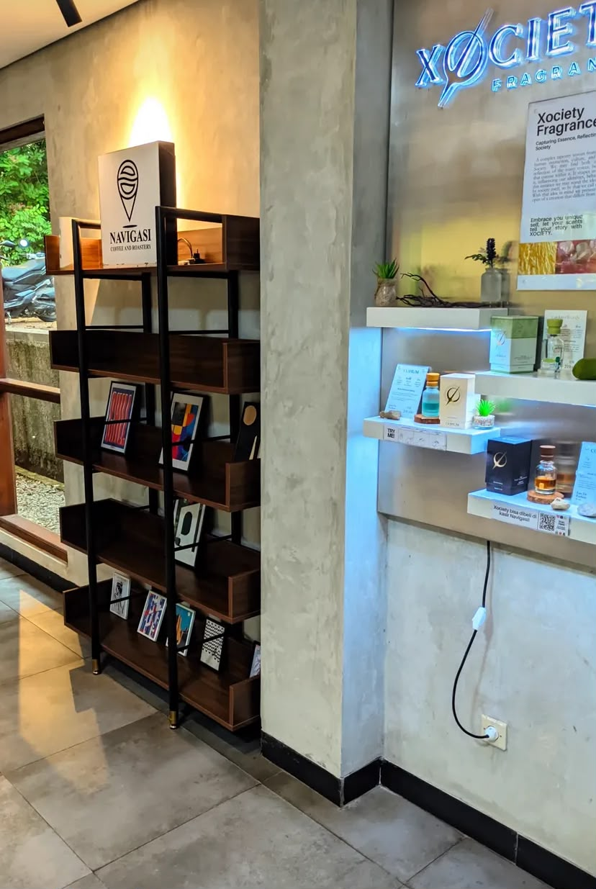
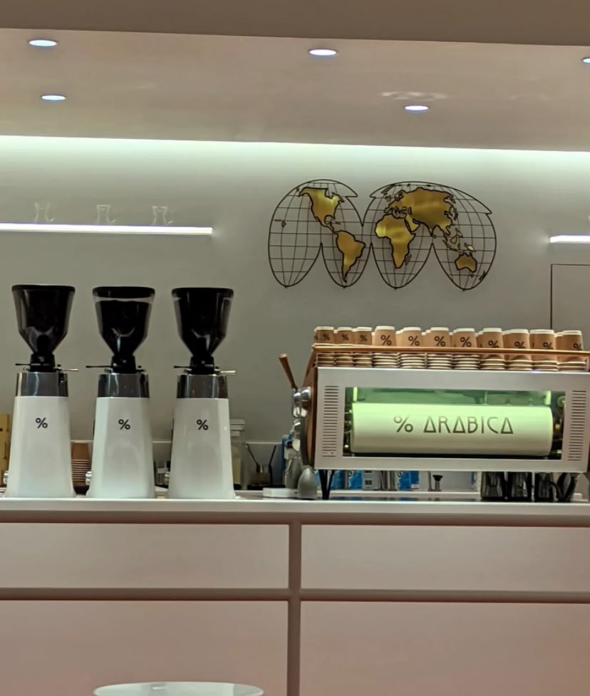
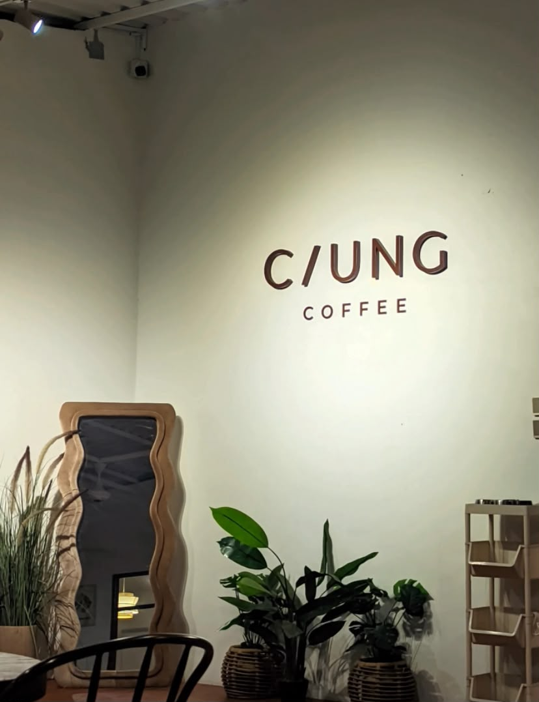
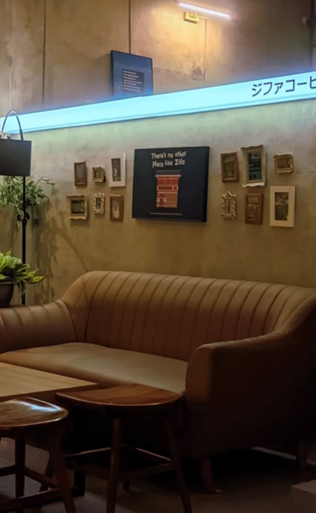
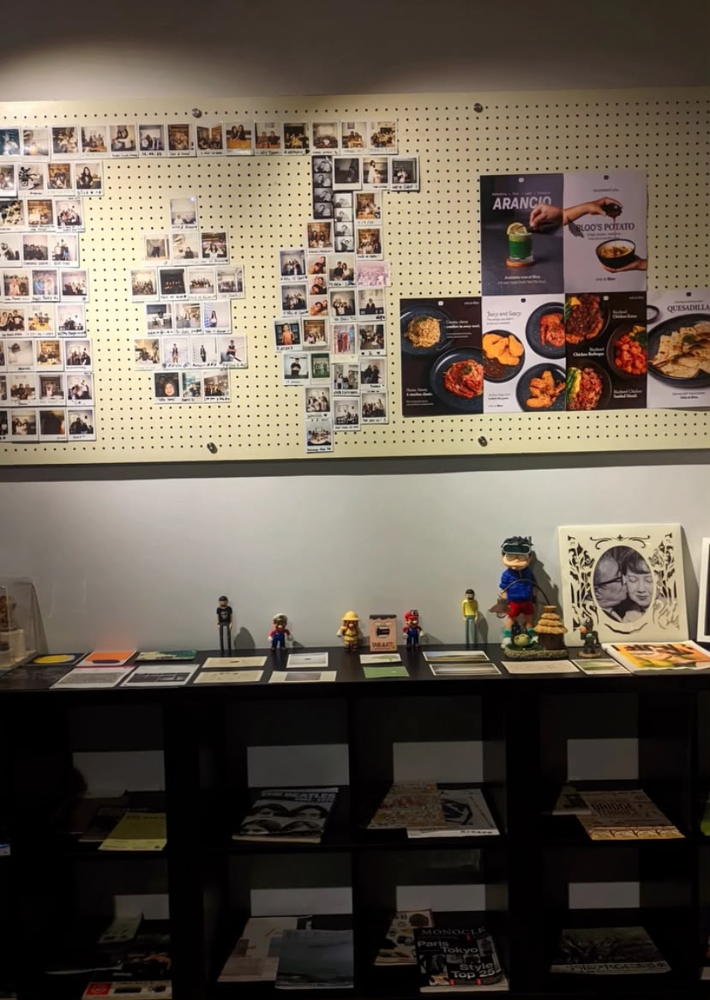
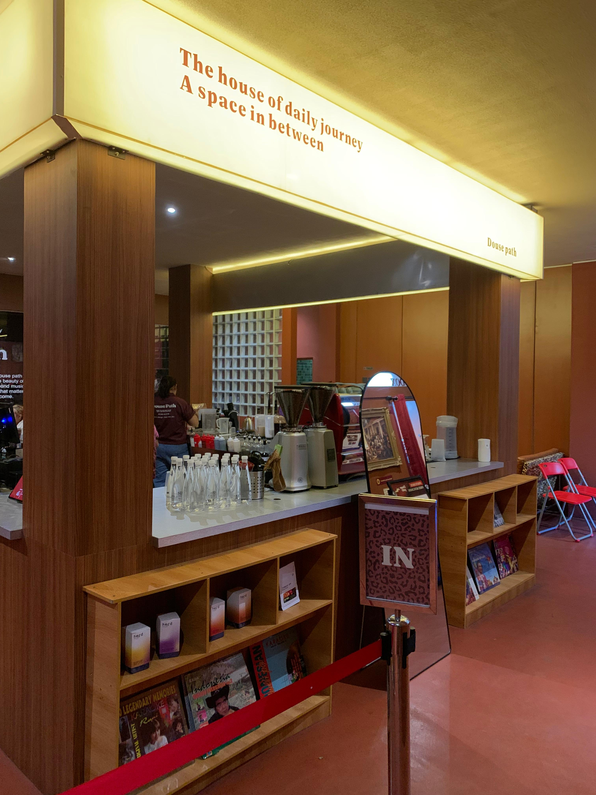
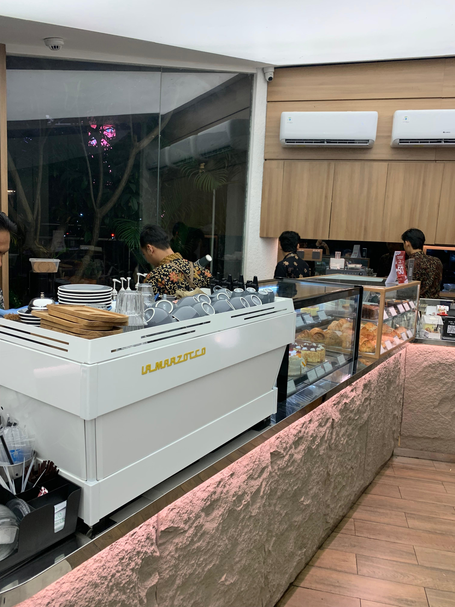
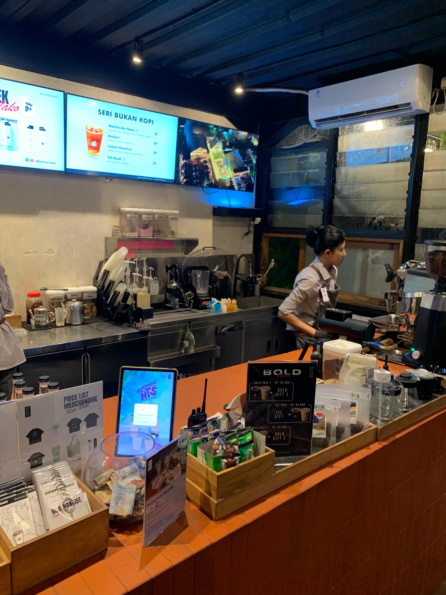
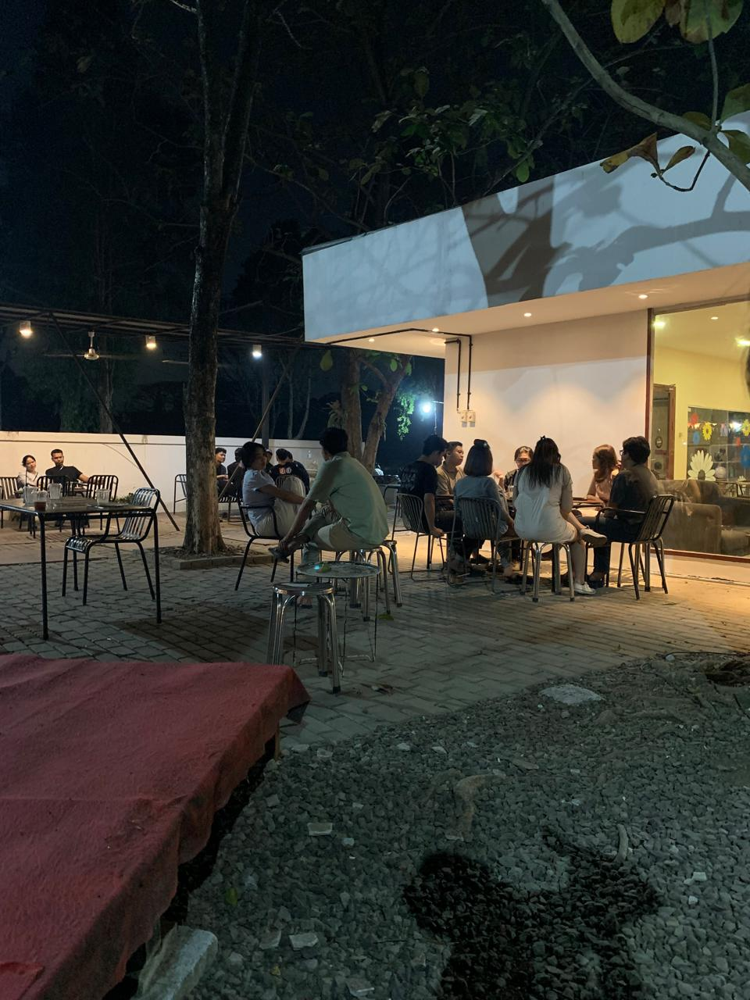

Tuan Sua Toko Kopi

Menawarkan suasana indie yang menenangkan dengan desain minimalis. Tempat ini sangat
direkomendasikan bagi Anda yang mencari ketenangan untuk membaca buku atau menyelesaikan
pekerjaan. Menu andalannya adalah es kopi susu dengan racikan house blend yang seimbang antara
manis dan pahitnya espresso.
Navigasi Coffee

Bagi para pencinta kopi single origin, Navigasi Coffee adalah destinasi yang tepat. Kafe ini
menggunakan metode manual brew yang bervariasi, memungkinkan Anda mengeksplorasi cita rasa dari
berbagai biji kopi nusantara. Suasana kafe cukup hangat dan cocok untuk berdiskusi bersama
teman.
Arabica Coffee

Destinasi premium bagi pencinta kopi sejati. Arabica Coffee menyajikan pilihan biji kopi Arabika
berkualitas tinggi dengan metode penyeduhan standar internasional. Desain interiornya yang
modern dan minimalis memberikan kesan elegan, menjadikannya tempat yang sempurna untuk menikmati
secangkir latte art presisi dan WFC yang produktif.
Ciung Coffee

Hadir dengan konsep semi-outdoor yang asri dan santai. Ciung Coffee menawarkan suasana yang
sangat cocok untuk melepas penat di sore hari sambil mengobrol santai. Menu andalan mereka
berfokus pada racikan kopi susu lokal yang khas dipadukan dengan berbagai camilan pendamping
yang disajikan secara kekinian.
Zifa Coffee

Zifa Coffee menonjolkan kenyamanan ekstra dengan area tempat duduk yang luas dan desain estetik.
Kombinasi antara pencahayaan ruangan yang hangat dan pilihan menu kopi yang ramah di lambung
membuat kafe ini menjadi pilihan favorit untuk menghabiskan waktu berlama-lama bersama sahabat
atau sekadar bersantai sendiri.
Bloo Coffee

Menawarkan nuansa industrial modern dengan sentuhan elemen visual yang ikonik. Bloo Coffee sangat
dikenal dengan inovasi minuman racikan mereka, termasuk sajian espresso yang dicampur dengan
cita rasa unik yang menyegarkan. Setiap sudut kafenya dirancang sangat fotogenik untuk
melengkapi pengalaman visual Anda.
Douse Path

Douse Path menghadirkan perpaduan arsitektur modern minimalis dengan ruang terbuka yang
memanjakan mata. Tempat ini sangat pas untuk bersantai sambil menikmati udara segar dan racikan
kopi yang di-roast dengan sempurna. Signature drink mereka wajib dicoba bagi Anda yang menyukai
keseimbangan rasa kopi yang halus namun tetap berkarakter.
Desember Coffee

Sesuai dengan namanya yang memberikan kesan akhir tahun yang sejuk dan hangat, Desember Coffee
menawarkan suasana yang sangat *homey* dan intim. Kafe ini adalah pilihan yang tepat untuk
bercengkerama santai, ditemani dengan pilihan *pastry* lezat dan sajian kopi seduh manual yang
dibuat dengan penuh ketelitian.
Kopi Nako Sentul

Terkenal dengan bangunan kaca ikoniknya, Kopi Nako cabang Sentul memberikan pengalaman ngopi
dengan hembusan angin segar dan pemandangan alam yang asri. Area *outdoor*-nya yang luas sangat
cocok untuk nongkrong beramai-ramai di sore hari. Pastikan Anda memesan Es Kopi Nako andalan
mereka yang manis, *creamy*, dan menyegarkan.
Hiiyra Coffee

Hiiyra Coffee memadukan desain interior yang sangat nyaman dengan menu minuman yang inovatif,
membuatnya selalu menjadi tempat yang menyenangkan untuk dikunjungi kembali. Jangan lewatkan
racikan es kopi susu gula aren andalan mereka yang menggunakan takaran espresso berkualitas
tinggi, sangat cocok menemani sesi santai Anda.